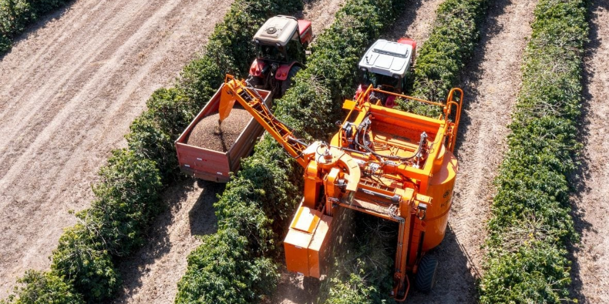

- Social: Garantindo condições dignas de trabalho e vida para os agricultores e comunidades rurais.
- Ambiental: Protegendo os recursos naturais como solo, água e biodiversidade, minimizando impactos negativos.
- Econômica: Assegurando a viabilidade econômica da atividade agrícola no longo prazo, gerando renda e oportunidades para as futuras gerações.
1.O que é Agricultura Sustentável?
ㅤㅤA agricultura sustentável se apresenta como uma alternativa crucial para os desafios do século XXI.
ㅤㅤMais do que um conjunto de técnicas agrícolas, ela representa um paradigma que busca harmonizar a produção de alimentos com a preservação ambiental e o bem-estar social.
ㅤㅤEm contraste com a agricultura tradicional, muitas vezes focada na alta produtividade à custa do meio ambiente, a agricultura sustentável prioriza o equilíbrio entre os pilares da sustentabilidade:

2.Adotar práticas agrícolas sustentáveis trás muitos benefícios para o planeta e para a sociedade, por exemplo:
- Solo mais saudável: Aumento da fertilidade do solo, retenção de água e redução da erosão.
- Alimentos mais nutritivos: Produção de alimentos com maior valor nutritivo e menor teor de agrotóxicos.
- Conservação ambiental: Proteção da flora e fauna, preservando os serviços ecossistêmicos essenciais.

- Redução de emissão de gás estufa: Diminuição do impacto da agricultura nas mudanças climáticas.
- Melhoria na qualidade de vida no campo: Fortalecimento das comunidades rurais e geração de renda local.
3.Transição a uma agricultura sustentável
ㅤㅤA construção de uma agricultura sustentável é um processo em constante evolução, que demanda a participação ativa e engajada de diversos agentes:
Agricultores
- Capacitação: Fortalecer as habilidades dos agricultores por meio de treinamentos e cursos sobre técnicas e práticas agrícolas sustentáveis, como agroecologia, manejo integrado de pragas e doenças, agricultura de precisão e manejo da água e do solo.
- Acesso à Tecnologia: Facilitar o acesso a tecnologias inovadoras e adequadas à realidade local, como sistemas de irrigação eficientes, biotecnologia, ferramentas digitais para gestão da produção e plataformas de comercialização online.
Governos:
- Políticas Públicas: Criar e implementar políticas públicas que incentivem e apoiem a transição para a agricultura sustentável, incluindo subsídios, créditos com juros baixos, incentivos fiscais, assistência técnica e pesquisa e desenvolvimento.
- Infraestrutura: Investir em infraestrutura rural adequada, como estradas, armazenamento de grãos, acesso à internet e energia renovável, para viabilizar a produção e comercialização sustentável.
- Legislação: Fortalecer a legislação ambiental e garantir sua efetividade, combatendo o desmatamento ilegal, a exploração predatória dos recursos naturais e a contaminação do solo e da água.
Empresas:
- Práticas de Compra Responsáveis: Adotar políticas de compra que valorizem produtos sustentáveis, estabelecendo critérios claros de sustentabilidade na seleção de fornecedores e na negociação de preços.
- Rastreabilidade e Transparência: Implementar sistemas de rastreabilidade que permitam aos consumidores acompanhar a origem dos produtos e os processos de produção, garantindo a procedência e a sustentabilidade.
- Apoio à Agricultura Familiar: Investir na agricultura familiar e na produção local, promovendo parcerias com pequenos agricultores e cooperativas para fortalecer a economia rural e garantir acesso a produtos frescos e de qualidade.
Consumidores:
- Consciência nas Escolhas: Optar por alimentos produzidos de forma sustentável, buscando selos e certificações que comprovem a origem e as práticas agrícolas utilizadas.
- Valorização da Agricultura Familiar: Priorizar a compra de produtos da agricultura familiar e da produção local, contribuindo para o desenvolvimento sustentável das comunidades rurais e para a preservação do meio ambiente.
- Engajamento e Participação: Buscar informações sobre a origem dos alimentos, participar de iniciativas que promovam a agricultura sustentável e cobrar ações dos governos e empresas em prol da produção sustentável.
ㅤㅤA agricultura sustentável ecoa como uma melodia harmoniosa para o presente e as futuras gerações, tecendo uma sinfonia de benefícios que transcende a mera produção de alimentos. Ela representa um compromisso inabalável com a segurança alimentar, a preservação ambiental e o bem-estar social, garantindo um futuro próspero para todos.

4.Pontos para destacar:
A agricultura sustentável vai além da alta produtividade, buscando o equilíbrio entre os aspectos sociais, ambientais e econômicos.
- Seus benefícios abrangem desde a saúde do solo e a qualidade dos alimentos até a preservação da biodiversidade e o combate às mudanças climáticas.
- A transição para uma agricultura sustentável exige o engajamento de diversos atores, desde agricultores e governos até empresas e consumidores.
- Adotar práticas agrícolas sustentáveis é um compromisso com o presente e com as futuras gerações, garantindo um futuro mais verde, próspero e saudável para todos.
Lembre-se:
ㅤㅤA agricultura sustentável não é apenas uma técnica, mas sim um novo paradigma para a produção de alimentos que visa garantir a sustentabilidade do planeta e o bem-estar da sociedade. Ao disseminarmos o conhecimento sobre seus benefícios e incentivarmos sua adoção, podemos construir um futuro mais justo e promissor para todos.

Benefícios da Agricultura Sustentável
- Solo mais saudável e fértil.
- Produção de alimentos mais nutritivos.
- Conservação da água e da biodiversidade.
- Redução da emissão de gases de efeito estufa.
- Melhoria da qualidade de vida no campo.
Práticas de Agricultura Sustentável
Diversas práticas podem ser adotadas...
- Agricultura agroecológica.
- Rotação de culturas.
- Adubação verde.
- Controle biológico de pragas e doenças.
- Agricultura familiar.